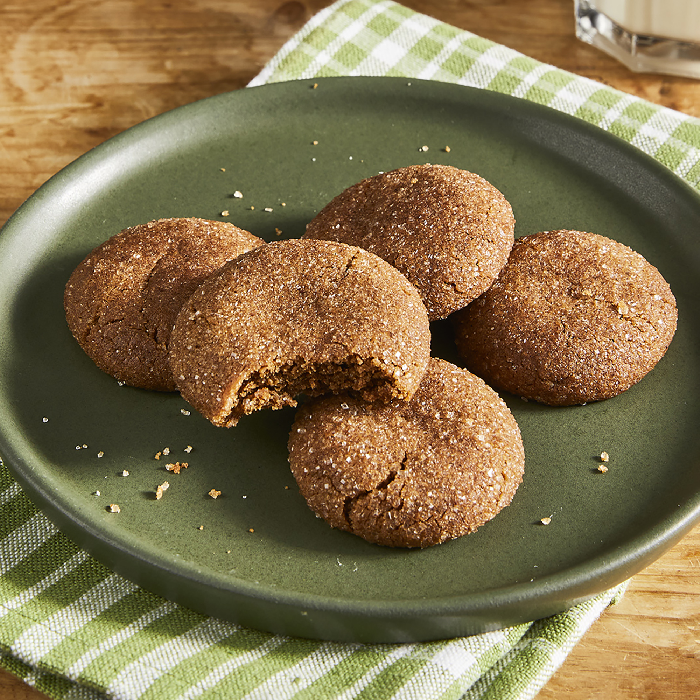

Grandma's Gingersnap Cookies

Description :
Ingredients :
- ⅓ cup cinnamon sugar
- 2 cups sifted all-purpose flour
- 1 tablespoon ground ginger
- 2 teaspoons baking soda
- 1 teaspoon ground cinnamon
- ½ teaspoon salt
- ¾ cup shortening
- 1 cup white sugar
- 1 large egg
- ¼ cup dark molasses
Steps :
- Preheat the oven to 350 degrees F (175 degrees C). Place cinnamon sugar in a bowl; set aside.
- Sift flour, ginger, baking soda, cinnamon, and salt into a mixing bowl. Stir the mixture until blended, then sift a second time into another bowl.
- Beat shortening in a large bowl with an electric mixer until creamy. Gradually beat in white sugar. Add egg and molasses and beat until light and fluffy
- Sift 1/3 of the flour mixture into the shortening mixture; stir to thoroughly blend. Sift in the remaining flour mixture and mix together until a soft dough forms.
- Pinch off small amounts of dough and roll them with your hands into 1-inch-diameter balls. Place balls in cinnamon sugar and roll to coat, then place 2-inches apart on ungreased baking sheets.
- Bake in the preheated oven until tops are rounded and slightly cracked, about 10 minutes, switching racks halfway through. Cool cookies on a wire rack.